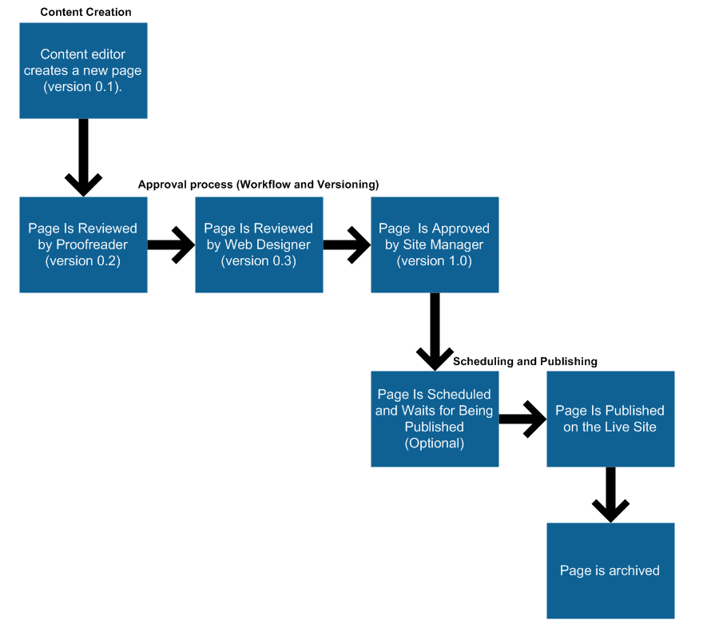

Configuring workflows
Kentico allows you to organize and control the process of creating, updating and publishing pages on your website by applying workflow.
In this chapter, you can learn how you can configure and set up workflows on the site. Specifically, you can learn about:
What is workflow?
Workflow is a sequence of steps that define the life cycle of pages. This allows you to ensure the quality of content and design by setting up a reviewing and approval process. In such a process, you can specify the roles that different people have and the places in the page life cycle where specific people can work with pages.
An example of a simple workflow process is a website that publishes scientific articles. An author writes an article and sends it for approval to an editor who makes corrections and submits the article to the head of the respective department. The head then publishes the page, making it publicly accessible on the website.
Best practice
You can use workflows together with content locking. Content locking makes sure that only one editor works on a page at a time. This prevents editors overwriting one another's work.
Important
Workflow only covers editing of page content, typically on the Page or Form tab in the Pages application.
Changes made to the design of page templates are outside the scope of workflow. For example, editing the content of a Static text web part on the Design tab immediately affects the output of all pages using the given template, regardless of their current workflow status.
What features are available?
Kentico allows you to use workflows for all pages in the content tree of the Pages application. This also includes the files uploaded to the content tree. Workflows consists of the following:
The workflow support allows you to organize the process of content creation, updates and publishing on your website.
Advanced workflow adds support of branching the workflow process based on macro conditions and user decisions. It also allows for automatic manipulation of the pages as they go through the workflow process.
The versioning support is tightly bound with workflow and allows you to store, view and roll back previous versions of the content.
Versioning without workflow creates a new version whenever a page is modified, while the whole editing process remains as if the page was using no workflow at all.
The content locking (check-in/check-out) support allows you to avoid concurrent modifications of the same page by multiple users.
The preview support allows you to see the content in the context of the site before it's published. This feature is only available for pages that use workflow - you can preview the pages before switching them to the following step.
The archiving support allows you to archive a page. Such a page is no longer displayed on the website, but it's kept in the content tree and can be re-published at any time later.
The following diagram shows an example of page life cycle with a workflow:

Example workflow process
The workflow process consists of any number of custom steps. Only authorized users or roles are allowed to modify and approve/reject a page in a particular step. Any authorized user can switch a page to the following or the preceding step. The current workflow step of a page can be found on its Properties -> Workflow tab. It is also indicated by the page status icons displayed next to pages in the content tree.
What type of workflow should I use?
Kentico offers two types of workflows - basic and advanced.
Basic workflow
In a basic workflow, one step is followed by another in a direct sequence. A basic workflow cycle of a page starts in the Edit step, which means the page is newly created or that there are yet unapproved changes in the page. After going through the defined approval steps, the page gets into the Published step. At that point the system makes the last version of the page visible on the live site.
Advanced workflow
Advanced workflow significantly differs from basic workflow in the way how you can design the flow of steps. You can let a page go through different steps based on various conditions, you can allow editors to choose which step they want the page to be moved to, or you can set timeouts for automatically moving pages from one step to another.